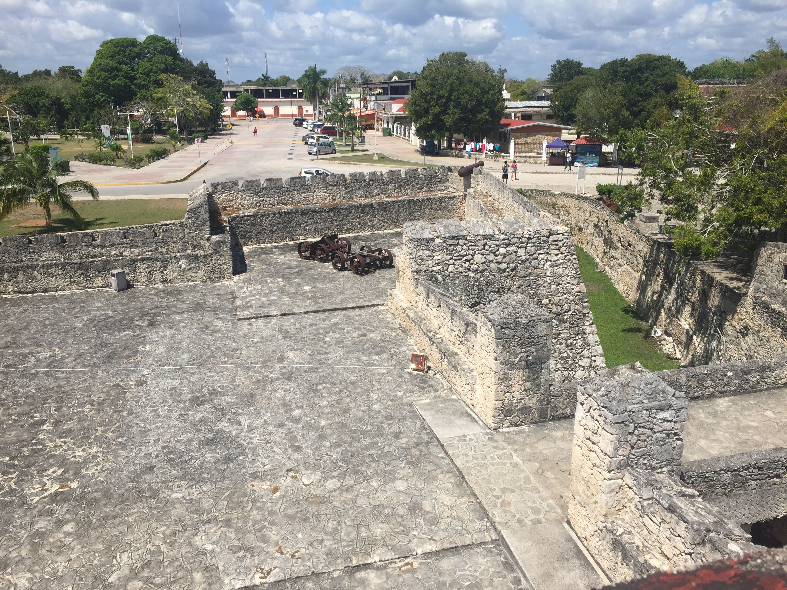
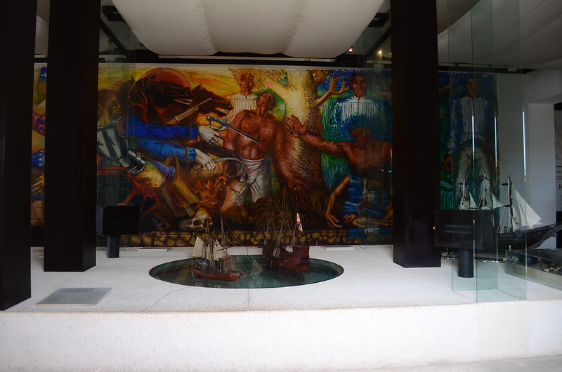
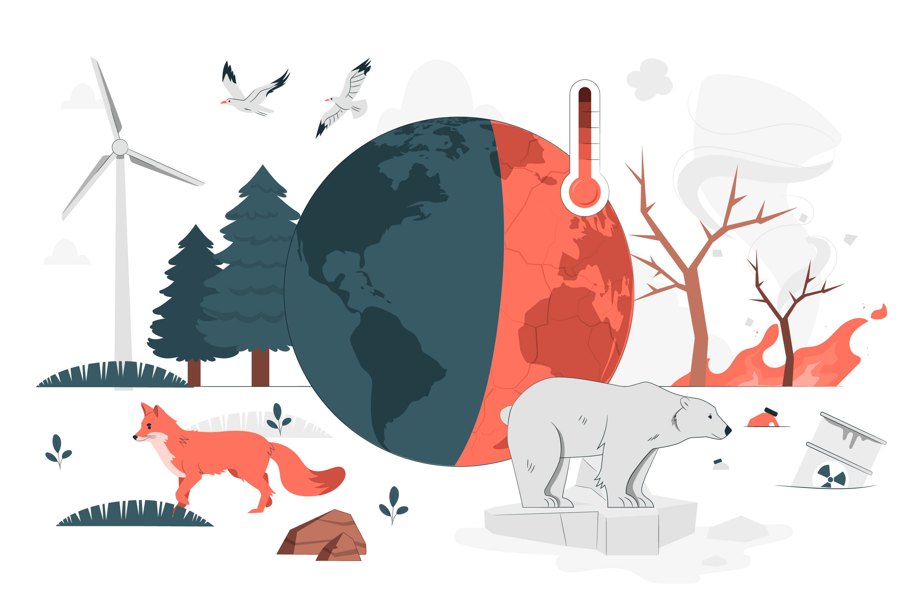
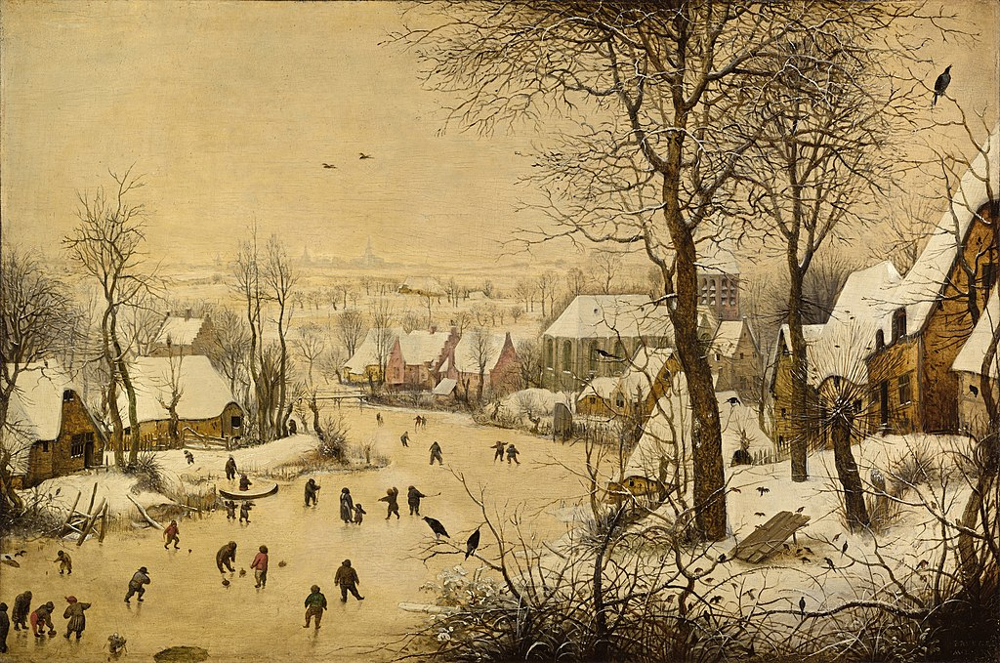

Patrimonio cultural (material e inmaterial) y cambio climático
¡Visitemos Bacalar!

Vista a la Laguna de Bacalar
Es momento de explorar un tesoro de la Península de Yucatán, Bacalar, pueblo mágico. En este lugar explicaremos algunos de los conceptos que son muy importantes en la antropología: patrimonio cultural y cambio climático. Para hacer tu exploración, te recomendamos llevar bloqueador solar, traje de baño y muchas ganas de sumergirte en este paradisiaco lugar.
Patrimonio cultural (material e inmaterial)
La época prehispánica
Nos trasladamos al año 1200 d.C., en Bacalar, Quintana Roo, mucho antes de la llegada de los españoles a América. Te sorprende ver la arquitectura y la organización de la ciudad, que estaba rodeada por una muralla y un foso, y que contaba con edificios ceremoniales, residenciales y defensivos. Te impresiona ver la belleza y la biodiversidad de la laguna de Bacalar, que era una fuente de agua dulce y de recursos naturales.

Fuerte de San Felipe Bacalar. Edificado para proteger a la comunidad de piratas.
Mientras paseas por este maravilloso lugar, te das cuenta que los mayas son una civilización avanzada y compleja, que desarrolló conocimientos y habilidades en campos como la astronomía, la matemática, la escritura, el arte y la arquitectura. Los mayas seguían una cosmovisión basada en el equilibrio entre el hombre y la naturaleza, y rendían culto a diversos dioses, como Itzamná, el dios creador; Chaac, el dios de la lluvia; o Ixchel, la diosa de la luna. Todo lo que observas te hace darte cuenta que los mayas tienen un gran patrimonio cultural.
¿Recuerdas qué es el patrimonio cultural? El patrimonio cultural se refiere al conjunto de bienes culturales, materiales e inmateriales, que poseen un valor significativo para una sociedad o una comunidad y que son considerados como parte fundamental de su identidad y herencia cultural (Yongqi, et. al. 2021).
Dentro del observas estelas, códices, templos y pirámides de los mayas. En lo encuentras mitos, ritos, calendarios y juegos transmitidos por ellos.
Saltamos al año 1545 d.C. y la región ha cambiado tras la conquista española. Observas con asombro que el paisaje ha cambiado mucho ya que las Iglesias, conventos y fortalezas han reemplazado las edificaciones mayas. Los mayas son obligados a convertirse al catolicismo y aprender español, adaptándose o resistiendo.

Mural de Elio Carmichael en el Museo Fuerte San Felipe Bacalar en el que se representa la conquista española de Bacalar. Imagen de :::Mer:::. Flickr
¿Recuerdas cómo se llama este proceso? ¡Exacto! La evangelización, es difundir una religión mediante enseñanzas y creencias, ha sido crucial en la historia para propagar religiones en diversas culturas.
En esta ocasión, llegamos al año 2000. Te cautiva con la rica historia y el entorno natural impresionante de Bacalar. Te das cuenta que este pueblo no sólo se ha vuelto famoso por sus aguas cristalinas y su laguna de los siete colores, sino también por su patrimonio cultural que ha sido cuidadosamente preservado a lo largo de los años.
Recorriendo calles empedradas, ves construcciones coloniales que cuentan la historia. Iglesias, edificios y casas tradicionales que conectan con generaciones pasadas. Aunque este maravilloso pueblo cuenta con múltiples atractivos, hay poco turismo y se cuidan estructuras y recursos.
En tu paseo por la ciudad, también te enteras de las tradiciones, las costumbres y las expresiones culturales únicas que han sido transmitidas de generación en generación. Los habitantes de Bacalar se enorgullecen de sus festividades tradicionales, la gastronomía regional y las leyendas locales que dan vida a la identidad única del lugar.
¿Qué tiene que ver todo esto con la globalización? Como podrás notar, la cultura y el entorno de Bacalar se han transformado en la medida que tiene contacto con otras culturas.
¿Qué te ha parecido este maravilloso lugar? Seguramente has aprendido mucho de este majestuoso espacio, incluso puede que tengas ganas de darte un chapuzón en esta laguna.

Patrimonio cultural ¿material o inmaterial?
Es momento de comprobar qué tanto aprendiste, realiza la siguiente actividad.
¿Qué tal te fue en esta actividad? Seguramente identificaste fácilmente los ejemplos de patrimonio inmaterial. Es momento de continuar.
Sin embargo, no todo es miel sobre hojuelas para la comunidad de Bacalar, el cambio climático también lo ha afectado. Veamos cómo ha sucedido.
Cambio climático

Cambio climático. Imagen de storyset. Freepik
Llegamos al presente, donde notas que el ambiente es más animado por la afluencia turística, esto se debe a que Bacalar fue nombrado "Pueblo Mágico" en 2006 por las autoridades mexicanas, atrayendo aún más visitantes de todo el mundo.
Lamentablemente, los efectos del también se hacen presentes aquí.
¿Qué produce el cambio climático? Tal vez recuerdes este término de tus clases de biología o geografía. El cambio climático ha ocurrido en distintas eras geológicas y está relacionado con factores naturales como actividad volcánica y cambios en la vegetación. Sin embargo, la actividad humana ha acelerado el cambio climático, por la excesiva producción de gases de efecto invernadero, causando el calentamiento global. Para que entiendas un poco mejor cómo la actividad antrópica ha acelerado el cambio climático, te invitamos a revisar el siguiente enlace. Da clic en la imagen que aparece a continuación, luego vuelve aquí para continuar.
Los pobladores te cuentan que la laguna de los siete colores, que es el corazón de Bacalar, ha sido directamente afectada por el las temperaturas elevadas alteran las temporadas de lluvias y sequías, disminuyendo el nivel del agua y afectando la biodiversidad.
Aunado a esto, los eventos climáticos como huracanes cada vez son más intensos y frecuentes, azotan esta zona, dañando infraestructuras y edificios históricos, además ponen en riesgo a los habitantes. La proximidad de la laguna con el mar, debido al incremento en el nivel del mar, aumenta la salinidad de la laguna, amenazando la vida acuática.
Te explican que las actividades económicas de la población también se ven afectadas, ya que debido a que Bacalar es un destino turístico importante, la degradación de los ecosistemas naturales y la belleza del lugar afectan directamente la industria del turismo, que es una fuente vital de ingresos para la región.
Seguramente ya te diste cuenta que calentamiento global y cambio climático son dos fenómenos muy relacionados, sin embargo estos tienen algunas diferencias, para saber cuáles son da clic a continuación.

Ejemplo de cambio climático: Pequeña edad de Hielo que abarcó desde comienzos del siglo XIV hasta mediados del XIX. Imagen de Oursana. Wikimedia Commons.

En Bacalar te encuentras a unos activistas que te cuentan que el aumento en el turismo en este pueblo mágico y otros lugares cercanos, ha aumentado la producción de basura que llega a los ríos subterráneos, contaminando el agua. Además de esto, la excesiva producción de basura también contribuye al calentamiento global, ya que se talan árboles para hacer vertederos de basura, al degradarse la basura genera distintos gases de efecto invernadero, la quema de basura también produce $CO_2$ y otros gases contaminantes.
Te das cuenta que, en respuesta al cambio climático y el calentamiento global, los habitantes de Bacalar están adoptando medidas de adaptación y mitigación. Se están implementando proyectos de conservación y restauración de la laguna, así como estrategias de . La comunidad está tomando conciencia de la importancia de cuidar su entorno natural y cultural para enfrentar los desafíos del cambio climático.
Para que puedas ver cómo están enfrentando la contaminación y el calentamiento global en este pueblo, te invitamos a ver el siguiente video de Uno Noticias, en el que podrás ver una de las estrategias que está tomando la comunidad para fomentar el desarrollo sustentable en la región. Toma notas para que puedas aprender sobre estas estrategias. Para acceder al video, da clic en la siguiente imagen, luego vuelve aquí para continuar.
Tu viaje en el tiempo te ha permitido ver de cerca cómo el cambio climático puede tener un impacto real en una comunidad y en su patrimonio. Bacalar es un recordatorio de que la acción colectiva y la conciencia ambiental son cruciales para preservar lugares especiales y enfrentar los desafíos que el cambio climático presenta.
¿Y la globalización? El cambio climático y el calentamiento global son fenómenos globales, que directa e indirectamente afectan a Bacalar. Aunado a esto, la promoción de la laguna de los siete colores como un atractivo turístico a nivel mundial, ha hecho que más personas se dirijan a este pueblo mágico para vacacionar o pasear, lo que ha traído contaminación en sus inmediaciones. Afortunadamente, la comunidad de este municipio ha estado tomando medidas para mitigar los efectos de la contaminación y el cambio climático.
Cambio climático
¡Es momento de un reto! Estamos seguros que has aprendido mucho sobre el cambio climático, para comprobar lo que has aprendido, te invitamos a realizar la siguiente actividad.
Estamos seguros que te fue de maravilla en esta actividad.
Seguramente ya te has dado cuenta que el cambio climático es un fenómeno que afecta al ser humano de forma directa, por lo que este es un fenómeno de gran interés para la antropología. Antes de pasar al siguiente tema, reflexiona un poco sobre lo siguiente: ¿Qué medidas estás tomando en casa para reducir los efectos del calentamiento global?, ¿qué estrategias falta implementar en tu casa y comunidad para ayudar al medio ambiente?